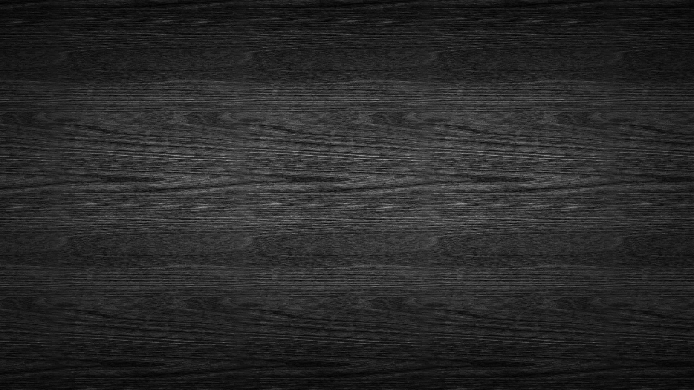
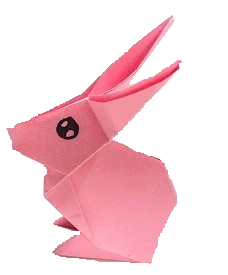

Origami Instructions and Diagrams
Step by Step diagrams are probably the most popular and easiest to follow way to show
how to fold things out of paper. Trying to find good origami instructions on the Internet
can be a lot of work though. To help your search we've put together the largest database
of free origami diagrams anywhere on the Internet.

Camel
- Camel's ears are furry.
- Camels can move easily in sand because of their specially designed feet.
- When they find water, they will drink as much as possible.

Rabbit
- A rabbit's teeth never stop growing!.
- A bunny's big ears aren't just for listening!.
- Like deer, a female rabbit is called a “doe” and a male rabbit is called a “buck.”.
Rabbit
- A rabbit's teeth never stop growing!.
- A bunny's big ears aren't just for listening!.
- Like deer, a female rabbit is called a “doe” and a male rabbit is called a “buck.”.